Каз Бреккер
«Грязные руки», Бастард Кеттердама, лидер Отбросов
Каз Бреккер — главный стратег и мозг команды «Шестёрки воронов». Он вырос на улицах Кеттердама и превратил боль, страх и ярость в оружие. Каз не обладает магией, но компенсирует это интеллектом, хладнокровием и умением просчитывать людей.

Внешний вид
У Каза бледная кожа и темные волосы, коротко подстриженные по бокам. По словам Инеж, его глаза цвета горького кофе или крепкого чая при солнечном свете. У него острый подбородок и худощавое, но мускулистое телосложение. На правой руке у него две татуировки: на предплечье — Ворон и чаша Отбросов, а на бицепсе — черная буква «Р», означающая «Ритвельд», его реальную фамилию.
Каз носит простые темные костюмы, сшитые по его фигуре, — одежду бизнесмена. Однажды он сказал Инеж, что носит деловую одежду, чтобы посмеяться над респектабельными бизнесменами, которых считает просто социально приемлемыми ворами и преступниками. Он также носит черные кожаные перчатки почти все время; вплоть до событий в более поздних частях Шестерки Воронов.
Читать подробнее
Каз хромает и носит трость с вороньей головой в качестве ручки, которую ему создал Фабрикатор. Сама трость — это оружие, специально взвешенное для дробления костей. Его хромота связана с прыжком с крыши банка в 14 лет, травма, которая никогда полностью не заживала. Эта нога была использована как метафора для самого Каза, поскольку его воспоминания никогда не исцелялись.
Личность
«Бессовестный лжец и вор. Но он сдержит слово и выполнит свою часть сделки, если вы ее заключите.» — Инеж Гафа
Каз может быть бессердечным и безжалостным. Он сделает почти любую работу, если захочет, независимо от того, насколько она отвратительна или кровава, таким образом заработав себе прозвище «грязные руки». Каз манипулирует, он коварен, и всегда следит за тем, чтобы человек контролировал ситуацию. По этой причине он сообразителен, и всегда имеет трюк в рукаве. Он не переносит контакты с кожей, и проявляет признаки гаптофобии, постоянно надевая перчатки на руки. Он редко позволяет своим эмоциям проявляться или влиять на его мышление, но, когда он все же их проявляет, ему трудно выразить их. Каз всегда спокоен и собран, никогда не позволяет людям увидеть, что он на самом деле думает. Однако, когда он становится особенно разъяренным, он становится еще безжалостнее. Примером этого может служить случай, когда он вырвал глазное яблоко Омена в «Шестерке Воронов» после того, как Омен нанес Инеж почти смертельное ножевое ранение. Он также склонен к гневу и мести; поскольку он поклялся отомстить за своего умершего брата, «кирпичик за кирпичиком» было его девизом. Кажется, Каз имеет мягкую сторону только тогда, когда он находится рядом с Инеж, и к концу «Шестерки воронов» начинает понимать, что у него есть подлинные чувства к ней.
История
Каз родом из небольшого села близ Лия в Керчии. Впервые он приехал в Кеттердам вместе со своим старшим братом Джорди Ритвельдом в возрасте девяти лет. Они продали ферму своего отца после его смерти и решили использовать деньги, чтобы начать новую жизнь в городе. Тем не менее, братья были обмануты Пеккой Роллинсом, который в то время использовал псевдоним Якоб Гертцун, и остались без гроша.
Они с Джорди пошли посмотреть на фокусника, который выступал на Западном обруче, и увидели мальчика (Филипа), продающего заводных собак. Пока Каз играл с собаками, Джорди завязал разговор с Филиппом, который привел его к Якобу Герцуну (Пекке). Филип также был частью аферы. Поддельная жена «Якоба» назвалась Маргит и подавала двум мальчикам еду, такую как гютспот, сделанный из сосисок. Каз был влюблен в их поддельную дочь по имени Саския, которая дала ему свою красную ленту, но также была частью аферы. братья в конечном итоге остались на улицах в страшной нищете.
И Каз, и Джорди подхватили Чуму Придворной дамы, также известную как огненная оспа, когда она пронеслась через Кеттердам. Джорди умер от этой болезни, и Каз тоже тяжело заболел. Братья считались мертвыми, их тела собрали и унесли на барже Жнеца в море. Однако Каз, едва живой, поплыл обратно в Кеттердам, используя тело брата как поплавок. Этот опыт был чрезвычайно травмирующим для молодого Каза и сделал его неспособным вынести контакт с кожей другого человека. Также подразумевается, что болезнь повредила его горло, в результате чего его голос стал скрипучим, который Инеж описывает как звучание камня на камень.
После смерти брата Каз поклялся, что заставит Пекку Роллинса заплатить за то, что он выманил у них деньги и привел к смерти Джорди. Он сменил фамилию на Бреккер, чтобы разорвать связи со своим прошлым и присоединился к отбросам в возрасте 12 лет. Каз начинал как простой хряк, но быстро поднялся по служебной лестнице в Отбросах, чтобы стать лейтенантом, которого многие боялись за его безжалостность. Именно благодаря ему был создан «Клуб воронов», один из главных источников дохода отбросов, и некогда скудная пятая гавань теперь процветала. Отбросы получили власть и репутацию в основном благодаря Казу, и он рассматривается многими как истинный лидер отбросов в отличие от Пера Хаскеля.
Читать подробнее
«Шестёрка Воронов»
Каз начинает рассказ с проведения операции, встреча с Хейлсом и Черными Пиками. Он раскрывает члена Отбросов, Большого Боллигера, который был двойным агентом. После успешного уничтожения Черных Пик, Каз, в состоянии замешательства, похищен Яном Ван Эгом, честным купцом, который делает предложение. Предложение предполагает, что если Каз и его команда успешно завершат невозможное ограбление, то он получит тридцать миллионов крюге: прорвется в ледяной двор Фьерды и спасет Бо Юл-Баюра. Каз, не в силах устоять перед предложением тридцати миллионов крюге, соглашается, собирая команду. Его команда состоит из Инеж Гафы (его призрак и шпион), Нины Зеник (сердцебит), Джеспера Фахи (стрелок и верный член Отбросов — также фабрикатор), Уайлана Ван Эка (подрывник и заложник), Матиаса Хельвара (Фьерданец и бывший дрюскель), и, конечно же, он сам.
Каз умудряется предвидеть что-то подобное, и поменял местами Уайлана и Кувея, чего не заметил Ван Эк. Каз настаивает, что если Ван Эку нужен Кювей, то ему придется отдать им тридцать миллионов Крюге. Ван Эк хочет напасть на них, но замечает, как Каз смотрит на Инеж, и вместо этого похитил Инеж, настаивая на том, что Каз сможет вернуть своего призрака, если отдаст Кювея.
Силы и способности
У Каза нет силы Гришей или магических способностей, но он искусен во взломе, карточных фокусах и ловкости рук. Эти способности настолько сложны, что Матиас часто называет его демжином или демоном. Он посвящен в информацию почти обо всех и обо всем в городе, благодаря скрытным способностям Инеж и его значительному влиянию на Кеттердам.
Его ловкость рук была показана много раз в серии. Один из случаев, когда он забрал пистолет у Пера Хаскеля, вытащил пули без его ведома и вернул его в считанные секунды.
Каз также наиболее известен как вдохновитель и лидер шестерки воронов. Он разрабатывает планы и руководит командой. Его планы часто чрезвычайно сложны, имеют много слоев. Даже те, кто участвует, не знают всего плана. Инеж, Джеспер, Нина, Уайлан и Матиас — все они беспрекословно выполняют его приказы.
Каз обладает выдающимся интеллектом для своего возраста и необычайной памятью, поэтому способен управлять такими предприятиями, как «клуб воронов» и пятая гавань.
В рукопашном бою он предпочитает использовать трость с ручкой в форме вороньего черепа, которую он обычно носит с собой повсюду. Было показано, что трость является смертоносным оружием и изготовлена фабрикатором для увеличения веса ее качания. Каз также чувствует себя комфортно рядом с ножами и пистолетами. Когда он безоружен, он также опасен: дерется кулаками или использует импровизированные предметы в качестве оружия.
Интересные факты
- Ли Бардуго заявила, что больная нога Каза основана на ее собственном остеонекрозе
- Brekker похож на «breker», что означает breaker на голландском языке (на нем основан язык Керчийский). Он придумал свою фамилию увидев название на машинке, которую видел в Кеттердаме.
- «Каз» означает «изъян», «несовершенство» или «дефект» как на словацком, так и на чешском языках
- У Каза может быть посттравматическое стрессовое расстройство, из-за его травматических переживаний после смерти Джорди, что проявляется в его постоянных воспоминаниях при контакте с человеческой плотью.
 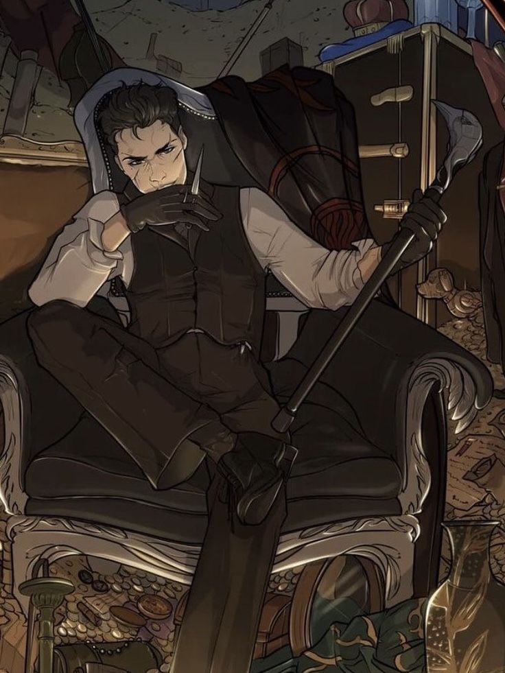
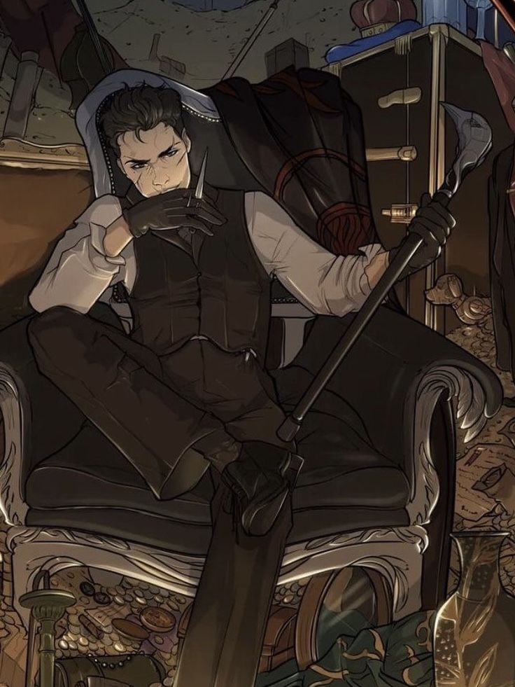
 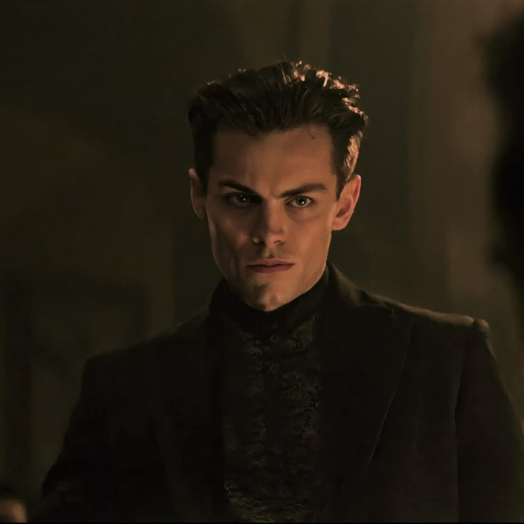
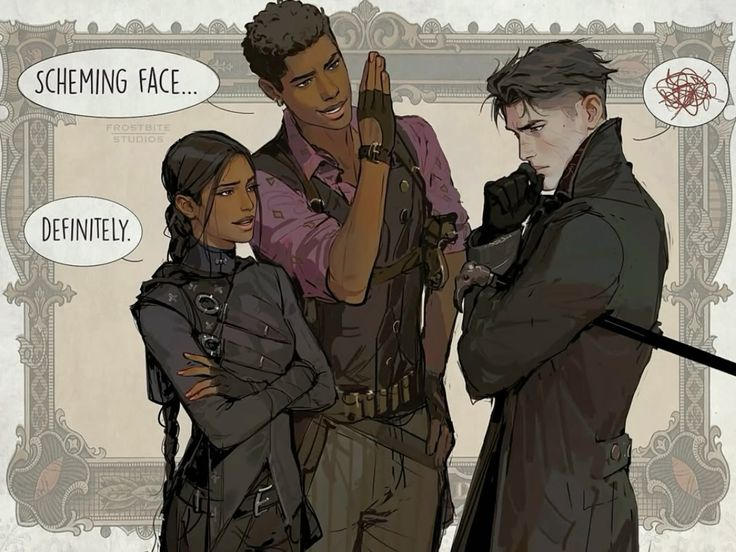
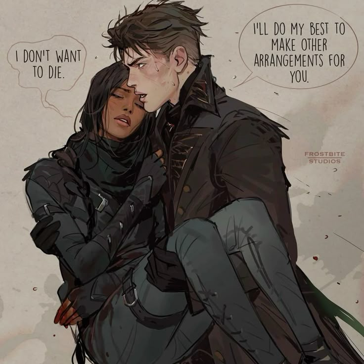
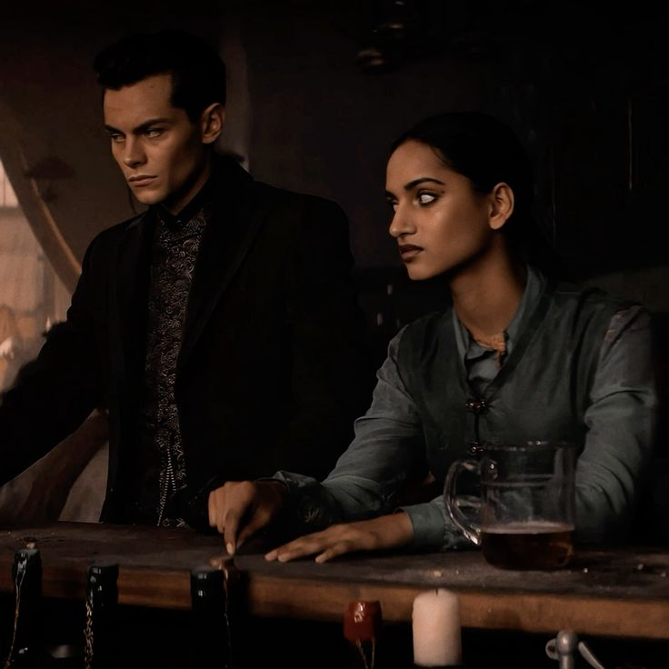
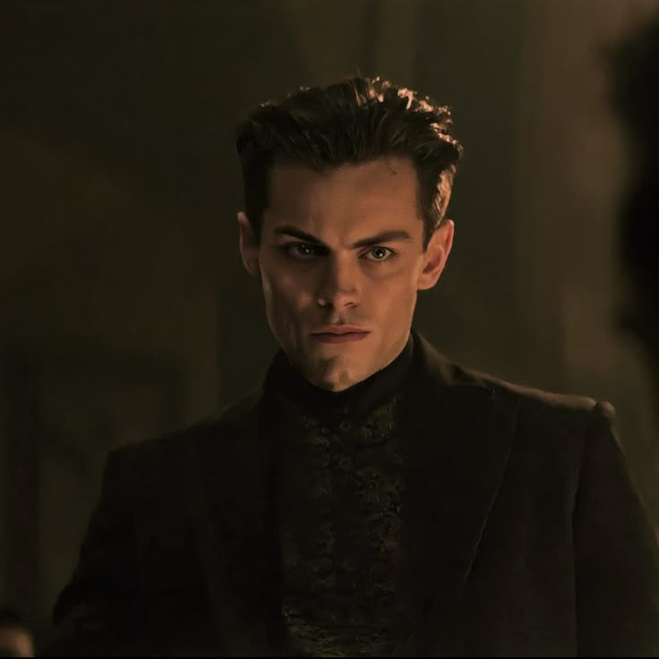
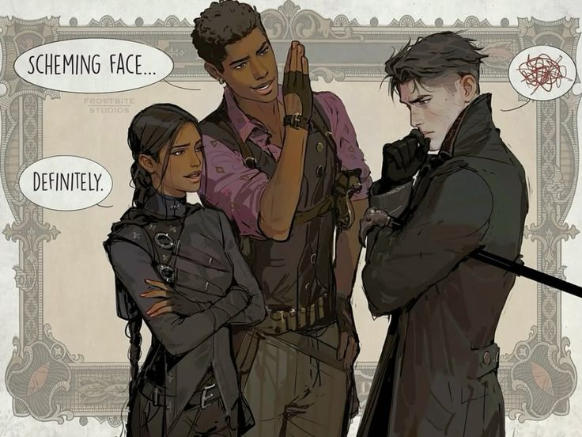
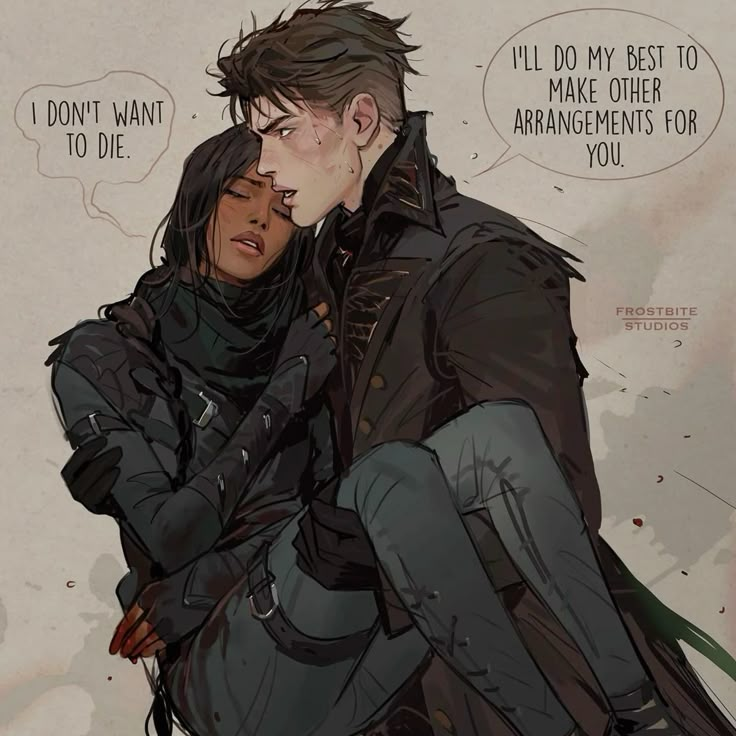
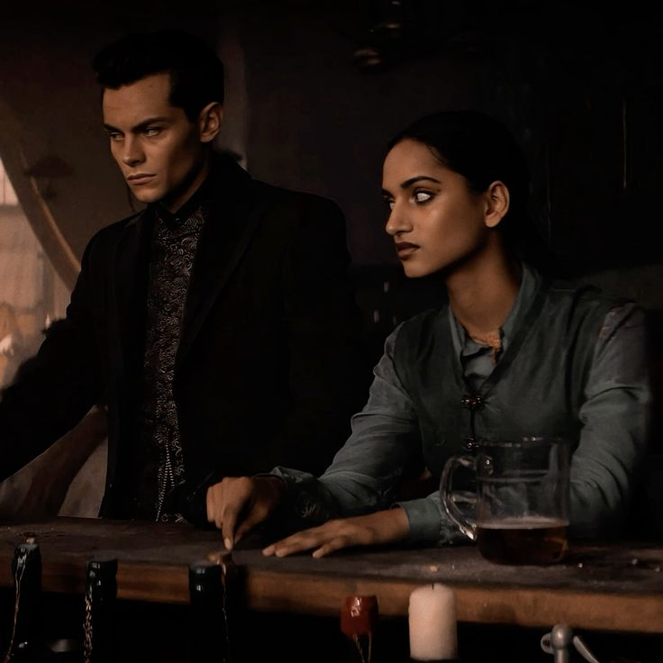

 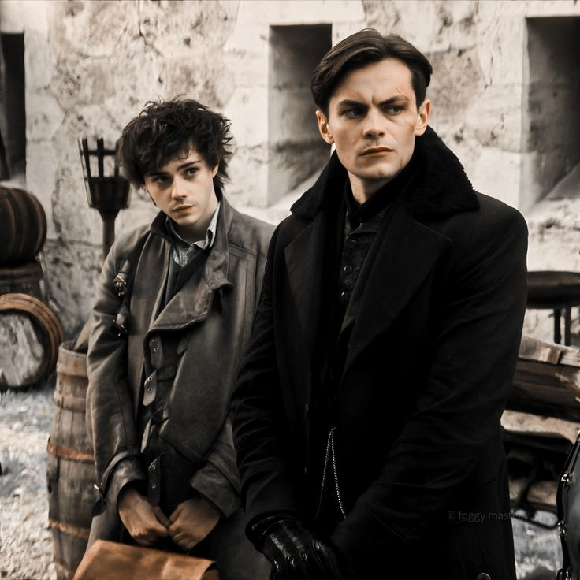
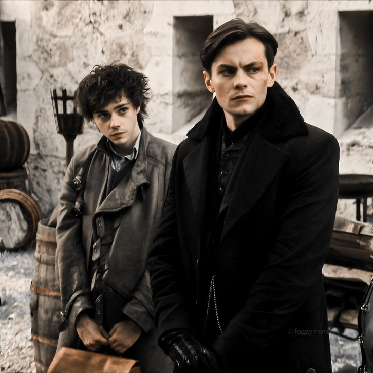